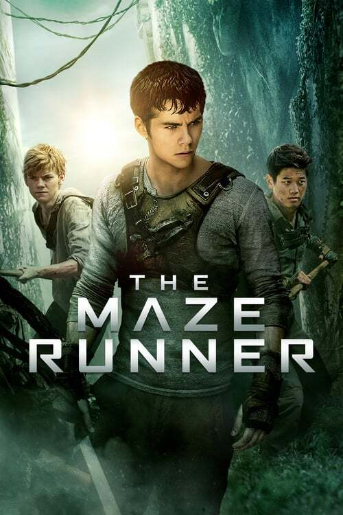
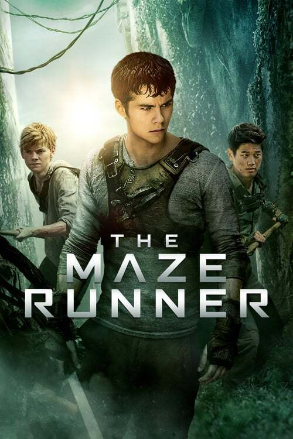

Ik drum al sinds ik 8 was. Drummen is een percussie-instrument dat bestaat uit cimbalen en trommels zoals de snaredrum, bassdrums enzovoort. Voor mijn lessen ben ik naar Stap Roeselare geweest. Dit is een academie voor woord, dans en muziek.
In mijn vrije tijd en vooral in het weekend, ga ik soms gaan padellen. Dit doe ik vooral met vrienden.
In mijn vrije tijd game ik ook wel eens met vrienden. We spelen allerlei verschillende spelletjes zoals Call of Duty en Minecraft.
Mijn favoriete muziekstijl is vooral pop. 1 van mijn favoriete nummer is "Beat Of Your Heart" van Purple Disco Machine en Ásdís.
Mijn favoriete bands zijn Kaleo en Imagine Dragons. 1 van favoriete nummers van Kaleo is "Way Down We Go" en die van Imagine Dragons is "Bones".
Mijn Favoriete films zijn de eerste 3 films van de Hunger Games en de triologie van de Maze Runner.


 
